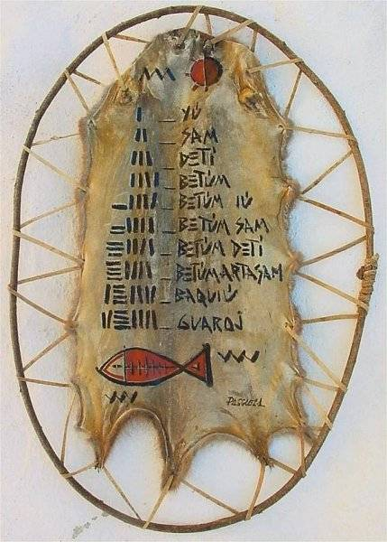
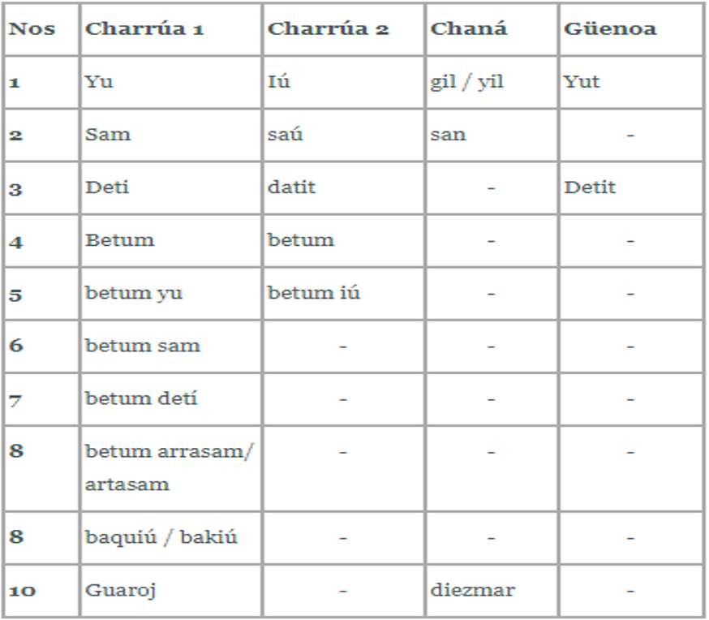

Numeración

Sistema de Enumeracion
RESUMEN:
El presente trabajo considera el sistema numérico empleado por la nación charrúa y sus características. Se procura organizar información existente e investigaciones disponibles sobre el tema. Se compara y discute su evolución y su vinculación con los de otras naciones aborígenes. Se plantean dudas, y preguntas. Siendo los logros matemáticos inseparables de su universo cultural, se esquematiza y discute este último, su relación con el habitat en que transcurrieron, el proceso de conquista, deculturación y posterior extinción de la referida nación aborigen.
1) Justificación.
Puede considerarse al desarrollo del conocimiento como un proceso de apropiación de la naturaleza. La realidad natural se transforma en una realidad humanizada en función de las distintas necesidades del hombre y en esa tranformación se genera conocimiento. Para que el proceso se cumpla debe existir un primer "reconocimiento" del objeto natural para luego insertarlo en la lógica de la actividad humana. Su consecuencia es una divergencia cada vez mayor entre el procesamiento del conocimiento cotidiano y las sucesivas elaboraciones conceptuales que se traduce en abstracciones cada vez más complejas. Estos procesos no suelen producirse en secuencia lineal porque están fuertemente condicionados por inevitables dinámicas históricas y sociales propias de cada pueblo, de cada sociedad.
La Matemática representa una gran aventura del conocimiento. En ese carácter se vincula con toda otra creación humana y acompaña la historia de cada pueblo donde contribuye a la interpretación de su realidad. La valoración del acervo conservado enriquece en cuanto supone el acceso a una tierra roturable llena de interrogantes y promesas de fecundidad.
El breve trabajo que sigue procura una aproximación más al estudio de un conocimiento y al de quienes lo construyeron: Los Charrúas. Sin duda y a pesar de la minuciosa tarea de los investigadores, queda mucho por dilucidar, más, en un momento en que la sociedad, para escapar del estatus de anónima homogeneidad impuesto a escala planetaria por el consumismo y la masificación, recurre a sus raíces en busca de los elementos que hacen a la construcción de la identidad nacional.
2) Breve Noticia sobre los Charrúas.
Mucho se ha escrito sobre los charrúas. Su herencia forma parte de la mística nacional a pesar de una relativa escasez de información respecto a orígenes, cultura, arribo al territorio de la Banda Oriental, etc. Están documentadas, en cambio, su bravura, su resistencia al colonizador y al invasor, su adhesión a Artigas en las guerras de independencia, algunas características físicas, algo de su organización social, su economía cazadora recolectora -al menos en tiempos de la conquista- y algunos detalles culturales y antropométricos obtenidos especialmente a partir de las descripciones de Azara, de D’Orbigny, de Larrañaga, y lo anotado del grupo de cuatro aborígenes presumiblemente charrúas llevados por de Curel a París en 1832. Se conserva también un conjunto de palabras de su lengua, alrededor de 70, aunque se ignora su estructura gramatical y recogidas por criollos, fueron transcriptas con la equivalencia fonética española supuesta por quienes las recogieron. Entre esas palabras, los nombres de los números del uno al diez. Se admite que la numeración surge en los pueblos por la necesidad de enumerar, como la medida por la necesidad de medir y cada uno de los saberes que hacen a la tecnología, para cubrir los diferentes requerimientos que surgen en el transcurrir del proceso de crecimiento cultural.
No fueron los charrúas ni los primeros ni los únicos ocupantes del territorio de la luego llamada Banda Oriental. Se señalan otras culturas anteriores y contemporáneas a los charrúas, con la salvedad de que los primeros cronistas no eran indígenas ni antropólogos y muchas veces desfiguraron y exageraron en sus relatos, cuando no se limitaron a transcribir los ajenos. Esas crónicas y la investigación posterior, mencionan como contemporáneos, también según la fuente, a minuanes, yaros, bohanes, güenoas o guenoas, chanás o chanaes, arachanes, mbeguaes, guayanás, unos más y otros menos o nada, emparentados con los charrúas. Tampoco puede olvidarse a los guaraníes que se introducían desde el norte, a los movimientos de pueblos, por imposición o nomadismo, y el proceso de mestización cultural –aculturación- descontrolada resultante del contacto con europeos. Muy especialmente por la actividad de las "Misiones" confiadas a religiosos -franciscanos, jesuitas, dominicos- para la conversión de los "infieles" a la fe cristiana. Según opinión corriente en la época, esos aborígenes infieles eran "animales de primera clase", "parecidos" al humano y así se los tuvo durante siglos. Aún se mantenía esa opinión en pleno siglo XIX, pese a la actitud mesurada de quienes denunciaron el implícito racismo.
Se ha recuperado en especial industria lítica de origen charrúa en la zona sur de Río Grande del Sur y parte del litoral paranaense lo que permite creer que su área cultural comprendió más que la Banda Oriental. Los antropólogos los consideran emparentados por aspecto físico y cultura con grupos pámpidos y y los diferencian de los guaraníes. Valga como ejemplo el uso de bolas arrojadizas que señala Daniel Vidart. Las "boleadoras" relativamente comunes en América, fueron luego adoptadas por otros grupos y por el gaucho. Son útiles para la caza o la guerra en campo abierto, en el monte pierden efectividad. De acuerdo a la información registrada por el Dr. Vilardebó los charrúas las denominaban "lai", "lai sam" o "lai detí" según el arma estuviera constituida por una, dos o tres bolas. Esa precisión léxica da idea de la importancia que asignaron a estas armas.
Muchos autores reconocen una macroetnia charrúa, constituida por los mismos charrúas, bohanes, minuanes, guenoas y chanáes, supuestamente mezclados estos últimos, con mbeguaes, aunque la aludida confusión de los cronistas, que incluye los nombres de las naciones, y la final integración de las pocas partidas sobrevivientes, hace muy relativa su identificación.
Desde un punto de vista lingüístico, conforme a los elementos que se poseen, algunos autores ha incluido al Charrúa como subgrupo de un grupo mayor: el grupo Macro Pano, más por afinidades que por semejanzas léxicas. Este grupo incluye también como subgrupos al Guaicurú - Mataco, al Lule – Vilela y al Pano propiamente dicho, y no aparece exactamente superpuesto al área pampeana extendiéndose por ejemplo, a pueblos asentados en el Chaco y Tucumán. Dentro del subgrupo Charrúa distinguen el "Bohar Charrúa" de la Banda Oriental, el "Chaná o Chané" (según algunos autores no son los mismos) y el "Güenoa", estos últimos asignados a la Argentina. No obstante muchos cronistas y estudiosos describen a estas parcialidades en la Banda Oriental, particularmente los chanaes con los que se funda la primera población: Santo Domingo de Soriano, luego que los charrúas abandonaran una reducción anterior intentada en la misma ubicación.
En la primera mitad del siglo XIX, después de la constitución del estado uruguayo, la macroetnia charrúa sucumbe finalmente a la deculturación, al fraccionamiento paulatino de las tierras de caza y recolección, a la introducción de enfermedades infecto contagiosas como la viruela y y el sarampión, a la intervención agresiva de otras naciones indígenas, a la guerra despiadada de europeos y criollos, y desaparecido Artigas del escenario político rioplatense, al ataque de las fuerzas gubernistas, que en términos étnicos y especialmente culturales fue equivalente al exterminio. Entremezclados y muchas veces ocultos, los sobrevivientes permanecieron detrás de nombres y apellidos hispánicos, refugiados en casas o estancias de amigos o en el "monte sucio", o emigraron en busca de tierras y gentes más hospitalarias.
3) El Hombre y el Pensar Numérico.
Evolución Primaria del Pensamiento Matemático.
La evolución del conocimiento matemático debe buscarse en la resultante del hombre como especie paulatinamente capaz de reunir experiencia y abstraer, y las muy condicionantes dinámicas propias de la evolución de cada sociedad. En ese sentido es probable que haya sido el propio cuerpo humano el instrumento y la referencia para los procesos de inserción de la experiencia dentro de la lógica y de la generación de conocimiento. No es menor el hecho de que el humano, por primera vez en la evolución, se haya hecho capaz de trasmitir información sistemáticamente por vía distinta a la genética, ya desde ese estadio evolutivo en que dedicó casi todo su esfuerzo a las funciones primarias de sobrevivencia: caza, pesca, recolección, reproducción y defensa, y adaptación o fabricación de útiles y armas para mejorar su desempeño. Es de presumir que ese momento se corresponde con el surgimiento de las nociones matemáticas, primero del contar, de número como consecuencia del contar y relacionar, y de medir luego, y que el propio cuerpo haya sido el elemento relacionante para realizar esas actividades de interpretación matemática de la realidad. Muchas de las referencias corporales surgidas en culturas sin relación entre sí han sobrevivido. Contar con los dedos, medir por pulgadas, cuartas, pies, brazas, pasos, codos, etc., parecen residir en la memoria genética de la humanidad en su conjunto.
El Contar.
Importa analizar esta importante operación que es contar. Contar significa establecer una relación entre dos colecciones de objetos de tal modo que a cada objeto de una colección, le corresponda uno de la otra colección.
Al contar -con los dedos, con objetos, con números- se aparean dos conjuntos. A cada elemento de un conjunto se le asigna un elemento homólogo del otro conjunto. Cuando alguien decide doblar un dedo o apartar una pequeña piedra por cada venado que encontró junto al arroyo, establece una aplicación. Elige un dedo por cada venado. Es decir que a cada venado hace corresponder un dedo, lo que se puede resumir así:
Venado è Meñique
Venado è Anular
Venado è Mayor
Venado è Indice
Se ha producido una aplicación de un conjunto de venados en un conjunto de dedos. Cada dedo es la imagen de un venado. No es lo mismo que elegir un venado por cada dedo porque las aplicaciones tienen sentido. Supóngase que se desea cambiar el sentido de la aplicación. Es decir que el conjunto de dedos se aplique al conjunto de venados. Aparece una dificultad: no se ha tenido en consideración al pulgar porque no había tanto venados como para usarlo. Por esa razón, si se trata de aplicar el conjunto de dedos de la mano al conjunto de venados, no es posible porque el pulgar no tendrá un venado que sea su imagen y por tanto no es una aplicación. De modo que se deberá proponer otro conjunto de dedos de la mano sin el pulgar. Son dos conjuntos diferentes aunque el primero incluye al segundo. Para este último conjunto es posible cambiar el sentido de la aplicación y que a cada dedo corresponda un venado:
Meñique è Venado
Anular è Venado
Mayor è Venado
Índice è Venado
Resulta entonces que cada venado es imagen de un dedo, lo que si se relaciona con el razonamiento anterior implica que cada conjunto es imagen del otro, el diagrama admite dos sentidos y la relación se ha hecho intercambiable. A cada venado corresponde un dedo y a cada dedo corresponde un venado:
Venado ç è Meñique
Venado ç è Anular
Venado ç è Mayor
Venado ç è Índice
A esto se llama una correspondencia biunívoca o biyectiva y esos conjuntos tienen el mismo número de elementos. Por eso es que se puede representar el conjunto de venados que estaban junto al arroyo mediante un conjunto de dedos o de piedras o de marcas en la tierra. ¿Qué tienen de igual esos conjuntos? Su cardinal.
Quien cuenta establece una primera relación aritmética que luego permite, dentro de los naturales, internarse en la realización de operaciones. Efectivamente una suma puede realizarse contando conjuntos uno a continuación de otro y una resta quitando a un conjunto los elementos que se correspondan con los del sustraendo. Y en fin, una división, repartiendo por conteo los elementos de un conjunto para formar tantos conjuntos como los que indica el divisor. Estos fueron recursos utilizados aún por los abacistas en la Edad Media cuando Europa discutía si se debían adoptar los nuevos métodos de cálculo que habían traído consigo los árabes.
c) El Concepto de Número.
Un importante paso adelante supone tener ya una multitud de esas experiencias y asignar no ya un objeto, sino un número a cada venado y decir uno, dos, tres, cuatro venados y entender que el último es el cardinal del conjunto de venados. Este es un modo más sofisticado de contar. La aplicación se establece con un conjunto cuyos elementos no son objetivos. Se hace necesario comprender la relación de ese concepto de cuatro con el de los números que le anteceden (o siguen).
Cuando se toman cuatro piedras, cuatro palitos o cuatro dedos, cada uno de esos conjuntos que es posible poner en correspondencia biunívoca con la clase cuatro, asume la función de representar concretamente una idea abstracta, un concepto –el cardinal del conjunto- independiente de su representación, que es el número cuatro. Ese nombre, cuatro, es sólo eso, un nombre con el que los hablantes de una lengua designan al concepto del número al que se refieren. Así, cuatro puede tener una representación escrita, diferente del nombre, que luego de la adopción de la numeración arábiga y su correspondiente evolución es el simbolo "4". Esto parece demasiado simple como para destacarlo, pero cuando se aprende una segunda lengua, lo primero que se advierte es que han cambiado los nombres de los conceptos ya adquiridos, entre ellos los de los números, y cuatro, no obstante se refiera al mismo concepto, pasa a ser, por ejemplo, "four". De la misma manera, puede encontrarse en los capítulos de un libro o en aquel viejo reloj de pie la forma romana "IV" -ó "IIII"- como representación escrita de cuatro. De manera que lo general es el concepto de la clase cuatro, que se designa o representa diversamente. Nombre y símbolo pertenecen a un entramado de códigos culturales construido en la interacción cotidiana que es propio de cada pueblo. De ahí la diversidad.
En la historia de la humanidad, la adquisición del concepto de número no es inmediata. No puede serlo porque es una abstracción, y las abstracciones responden a generalizaciones y evoluciones con base multiexperiencial. Algo que se ha anotado con respecto a pueblos muy primitivos es la distinción prenumérica cualitativa entre lo singular y lo plural, "uno" y "muchos", sin que para "muchos" se hagan más precisiones. Posteriormente aparecen los dígitos, de "dígito", dedo. Es decir, aquellos números que es posible contar con los dedos. Muchos exploradores del siglo XIX y aún del XX se sorprendieron al encontrar pueblos en etapas de construcción numérica donde lo cualitativo comenzaba a dar paso a lo cuantitativo, por ejemplo "uno", "dos", "muchos".
Formación del Sistema Numérico. Base del Sistema.
Hablar de base de un sistema numérico significa en lo previo, haber establecido que cada número resulta de agregar la unidad al antecendente y en esencia reconocer que los números para contar son muchos y que es menester simplificar el conteo mediante un convenio que permita la repetición de algunos números. Eso equivale a acordar que cuando se acabaron los dedos de la mano para contar los venados o lo que se quiera, se tiene una mano entera y que luego los números que siguen pueden ser designados como una mano más un dedo, dos dedos, etc. Este recurso facilita el objetivar. Si se está contando con el auxilio de palitos, puede convenirse que uno mayor o de color diferente representa una cierta cantidad de los palitos originales. Entonces se obtiene por la equivalencia convenida una forma más rápida y eficiente de contar. A esa equivalencia convenida se la llama base del sistema porque un número determinado de palitos ha de ser canjeado por el que los representa. Se ha creado una unidad del orden superior. Si se eligió, por ejemplo, reemplazar 8 palitos verdes por uno seco, al contar es posible substituir y decir que se tiene un palito seco y seis verdes y entender que equivalen a 14 verdes. De allí a establecer consuetudinariamente la nueva representación y dar nombre a los números conforme a la base, queda un paso pequeño que pronto se transita, y luego se puede convenir que ocho palos secos se equivalen a otro, por ejemplo pintado de rojo y se consolida el sistema. Con la salvedad de que "pronto", en términos evolutivos, puede llevar siglos...
Dada la coincidencia en bases menores se podría pensar que los pueblos primitivos prefieren contar con menos números, probablemente porque no tienen conjuntos muy grandes para contar y porque siempre queda el ya usado recurso de "muchos" para cuando se supera un tope cualquiera del naciente sistema numérico. Por otra parte, el proceso de formación de estructuras, bastante incompleto, hace muy difícil la percepción simultánea de conjuntos de más de tres, cuatro o cinco elementos –esto se observa muy bien en el juego del dominó- y un primer dominio del esquema corporal -sólo las manos- no ayuda a representarlos. Así muchos pueblos paleolíticos han desarrollado sistemas numéricos binarios, que nada tienen que ver con la necesidad de emplear esa naciente aritmética en ordenadores.
Debe advertirse que la elección de la base de un sistema numérico es un proceso que se cumple contemporáneamente a la construcción del propio sistema. Como se ha dicho, muchos pueblos elaboraron sistemas de base 5 porque en una instancia posterior del contar es frecuente el uso de los dedos y el humano posee cinco dedos en cada mano, que utiliza con ese fin. Realmente, en una primera etapa, reunir piedras o palitos y transportarlos, cuando los dedos le acompañan a todas partes, no tiene en sí objeto. No obstante, pueblos más aplicados han transportado collares con cuentas para auxiliarse en el contar. Otros, admirablemente industriosos, han elaborado ábacos, algunos muy complejos, como los japoneses, con el mismo fin.
Definida la base, la estructura de los nombres para los números puede seguir varias formas que por lo general se agrupan en tres:
Una forma aditiva-substractiva. Consiste en agregar a la unidad de orden superior definida, las unidades de orden inferior que resten. Si se ha definido la unidad de orden superior mano, equivalente a 5 dedos, los números siguientes a mano serán: mano y un dedo, mano y dos dedos, etc, hasta mano y cuatro dedos, el siguiente será dos manos y luego dos manos y un dedo. Al dar un paso más en el proceso de abstracción y por implícito el sustantivo dedo, se tendrá mano y uno, mano y dos, etc. Podría adoptarse también la forma uno y mano en vez de mano y uno. Es decir, poner últimas las unidades de orden superior. En alemán, luego del veinte (swanzig) se sigue con "eins und swanzig" (literalmente uno y veinte). Otra posibilidad que se abre es la yuxtaposición. Eliminar la conjunción "y" y contar mano uno, mano dos, mano tres, etc. Muchas lenguas primitivas usan pocos conectivos lo que tiende a la yuxtaposición. También aunque no tan frecuentes, se encuentran formas que expresan una diferencia. "Five to twelve" ("cinco para las doce") se usa para expresar 11:55. "Dos menos diez" es aceptado para 13:50, "XL" es la escritura numérica romana para cuarenta.
Una forma multiplicativa. Esta forma consiste en designar a un número por medio del producto de otros dos. Siguiendo el ejemplo anterior se podría introducir por ejemplo la expresión doble dos para significar cuatro y así decir mano doble dos para significar mano y cuatro.
Una forma mixta. Un sistema puede adoptar de preferencia la forma aditiva e introducir formas multiplicativas. En francés el sistema es habitualmente aditivo, no obstante aparece la denominación de tipo multiplicativo "quatre-vingts" (literalmente cuatro-veinte) para designar al ochenta que puede llegar a ser multiplicativo aditiva como "quatre-vingt-dix-huit" (cuatro–veinte-dieciocho) para el noventa y ocho, formas que han sido reconocidas además como vestigio de una primitiva base veinte (manos y pies).
4) Cuadro Comparativo de la Numeración entre Charrúas y otros grupos afines.
a) Cuadro Comparativo
